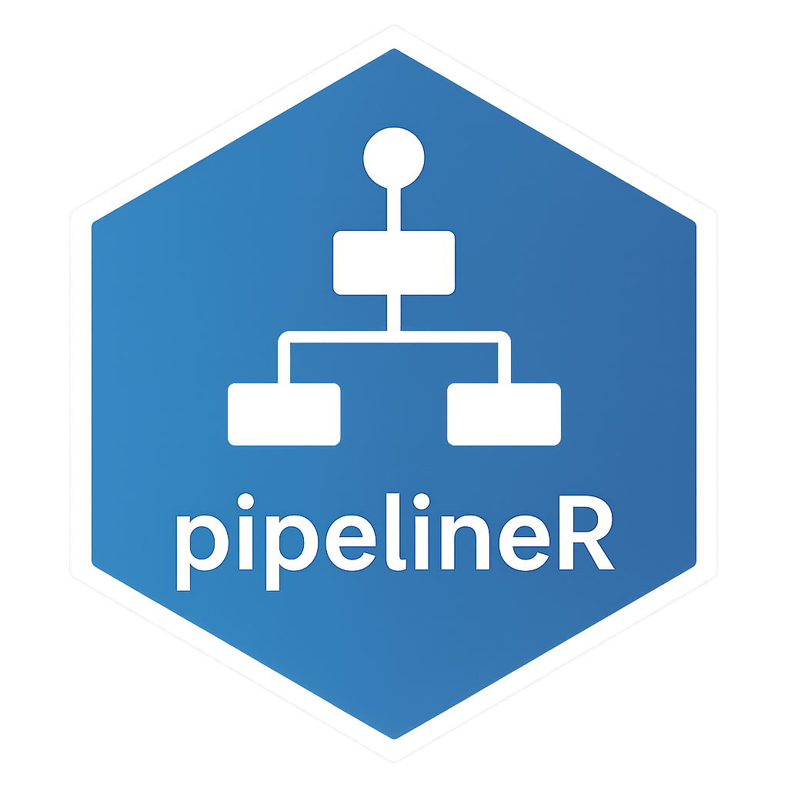

Connect to the PostgreSQL Database
connect_db.RdEstablishes a connection to the PostgreSQL database using credentials and host information stored in environment variables. This function is used internally by other functions that need to interact with the ADEM database.
Details
Environment variables expected:
PG_DB: database name
PG_HOST: database host
PG_USER: database username
PG_PASSWORD: database password
Examples
if (FALSE) { # \dontrun{
con <- connect_db()
DBI::dbListTables(con)
DBI::dbDisconnect(con)
} # }